40 سؤال
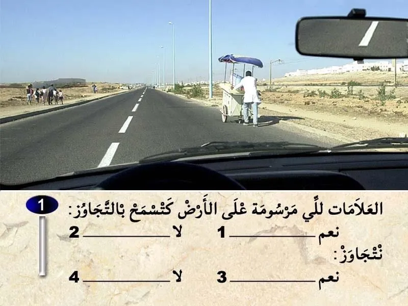
الجواب الصحيح: 1 و 3
العلامات المرسومة على الأرض الخط المتقطّع فهو يسمح لي بالتّجاوز، ويمكنني أيضا التّجاوز بما أن التّشوير الأفقي الخط المتقطّع يسمح لي بذلك وأيضا لا توجد عربات من الخلف تستعد لتجاوزي ولا توجد سيارة قادمة من الاتّجاه المعاكس. (الراجلين على الجهة اليسرى فهم بعيدون ويمكنني التّجاوز). إذن في هذه الحالة العلامات المرسومة على الأرض فهي تسمح لي بالتّجاوز و يمكنني أيضا التّجاوز.
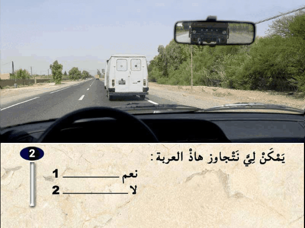
الجواب الصحيح: 2
التّشوير الأفقي الخط المتقطّع فهو يسمح لي بالتّجاوز كما أنه لا توجد عربات قادمة من الاتّجاه المعاكس، لكن توجد شاحنة من الخلف تستعد لعملية التّجاوز، إذن في هذه الحالة لا يمكنني تجاوز هذه العربة.
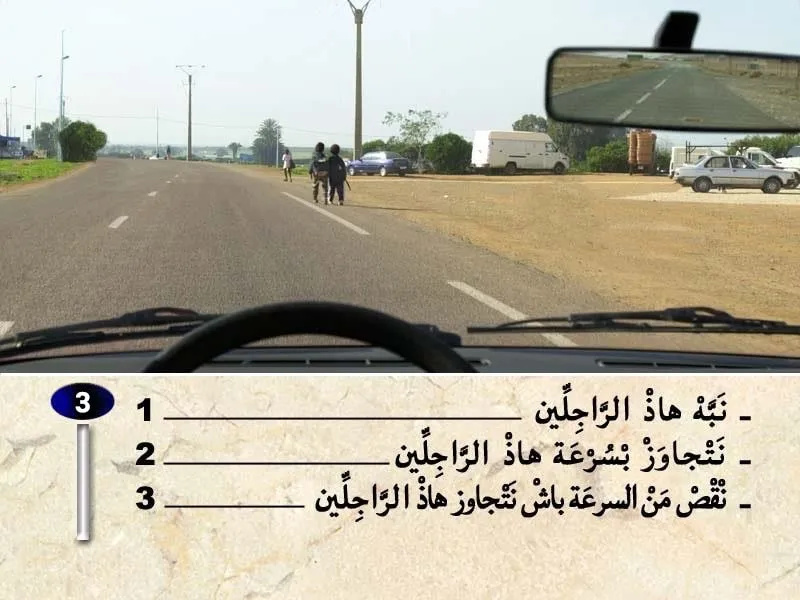
الجواب الصحيح: 3
التّّنبيه بإشارة ضوئية فهو بدون فائدة لأن الرّاجلين لن يشاهدوا التّنبيه الضوئي، بالنسبة للتّنبيه بالمنبّه الصوتي فلا يمكن التّنبيه به لأنه ممنوع على الرّاجلين، بما أن الراجلين يشكلون خطر لأنهم يسيرون قرب الطّريق إذن هذا الأمر يشكّل خطر في حالة الخطر دائما أقوم بالإنقاص من السّرعة لتجاوزهم وليس الزّيادة في السّرعة. إذن في هذه الحالة أنقص من السّرعة لكي أقوم بتجاوز هؤلاء الرّاجلين.
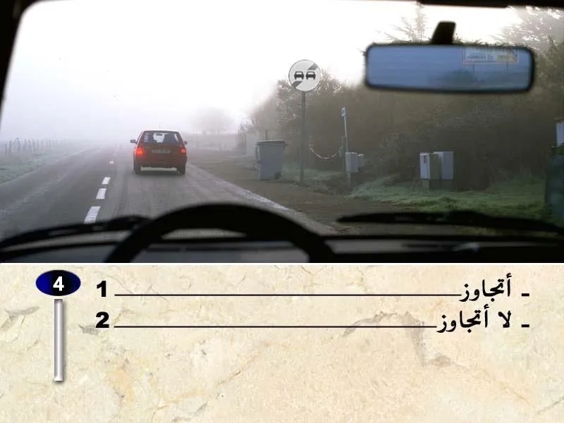
الجواب الصحيح: 2
العلامة الطّرقية فهي تعمي انتهاء منع التّجاوز الذي كان سابقا والان يمكنني التّجاوز، التّشوير الأفقي الخط المتقطّع يسمح لي بالتّجاوز لكن كما نلاحظ في الصورة فيوجد ضباب كثيف والرؤية غير واضحة في الأمام، لو قمت بالتجاوز فيمكن أن أتقابل مع عربة قادمة من الاتّجاه المعاكس. إذن في هذه الحالة لا أتجاوز.
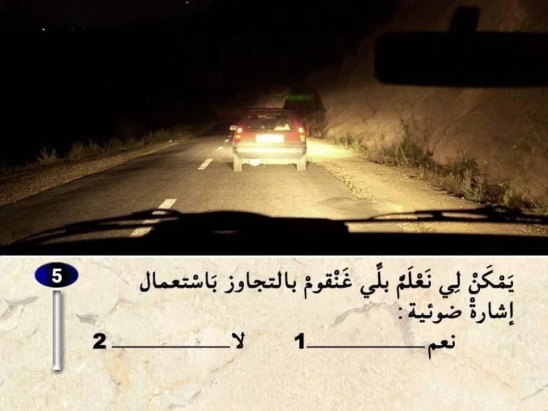
الجواب الصحيح: 1
لكي أقوم بالتّجاوز فدائما أقوم بالتّنبيه، في هذه الحالة يمكنني استعمال إشارة ضوئية لتنبيه السيّارة التي أمامي على أنني سوف أقوم بتجاوزها.
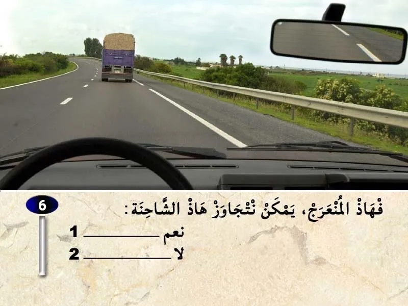
الجواب الصحيح: 1
إذا قمنا بالمراقبة فإن المرآة الدّاخلية للسيارة تظهر على أنه لا توجد عربات تستعد لتجاوزي، بالنسبة لهذه الطّريق فهي طريق ذات إتّجاه واحد يعني أنه لن أصادف عربات قادمة في الاتّجاه المعاكس (عرفنا ذلك من خلال الخط المتّصل على أقصى اليسار). إذن في هذه الحالة بما أنه لا توجد سيارات تستعد لتجاوزي والطّريق ذات إتّجاه واحد والخط متقطع إذن يمكنني في هذا المنعرج تجاوز هذه الشّاحنة.
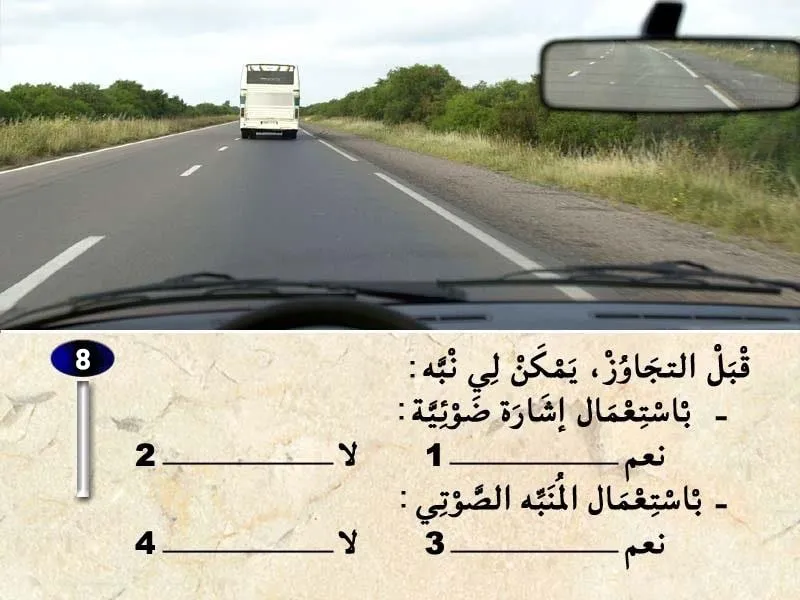
الجواب الصحيح: 1 و 3
إستعمال الإشارة الضّوئية للتّنبيه قبل التّجاوز فهو مسموح به دائما، بالنسبة للإستعمال المنبّه الصوتي للتّنبيه فيمكنني إستعماله فقط لو كنت خارج التجمّع السكاني وفي النّهار، في الصورة يتّضح على أنني خارج التجمّع السّكاني وفي النّهار إذن يمكنني استعمال المنبّه الصوتي للتّنبيه. إذن في هذه الحالة قبل تجاوز الشّاحنة فيمكنني التّنبيه بإشارة ضوئية ويمكنني كذلك التّنبيه بالمنبّه الصّوتي.
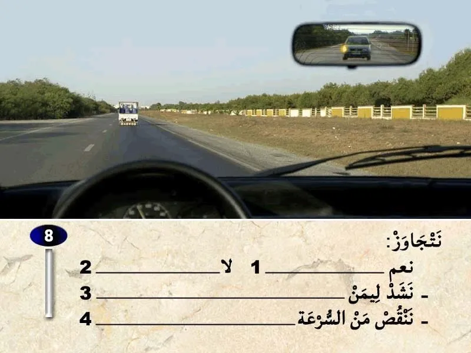
الجواب الصحيح: 2 و 3
كما نلاحظ في المرآة الدّاخلية للسيارة فتوجد سيارة تستعد لتجاوزي إذن لا يمكنني تجاوز العربة التي أمامي. عندما تستعد عربة لتجاوزي فدائما أقوم بالاحتفاظ بالسّرعة التي أسير بها (لا أزيد من السّرعة ولا أنقص منها) وأن ألتزم أقصى اليمين. إذن في هذه الحالة لا يمكنني التّجاوز ويجب عليّ إلتزام أقصى اليمين.
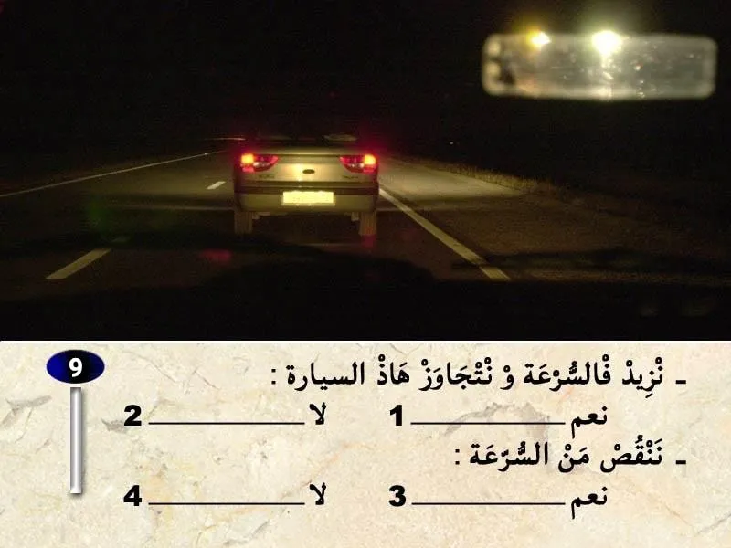
الجواب الصحيح: 2 و 4
كما نلاحظ في المرآة الدّاخلية للسيارة فتوجد سيارة تستعد لتجاوزي وقامت بتشغيل مؤشر تغيير الاتّجاه إذن لا يمكنني الزّيادة في السّرعة وتجاوز العربة التي أمامي. عندما تستعد عربة لتجاوزي فدائما أقوم بالاحتفاظ بالسّرعة التي أسير بها (لا أزيد من السّرعة ولا أنقص منها) وأن ألتزم أقصى اليمين. إذن في هذه الحالة لا أقوم بالزّيادة في السّرعة لتجاوز العربة التي أمامي ولا أقوم بالإنقاص من السّرعة.
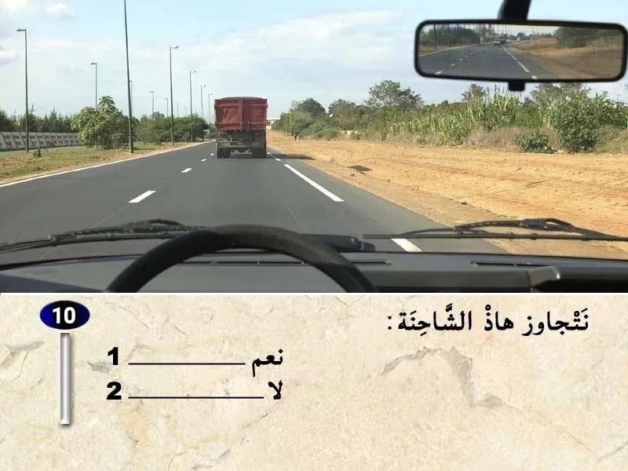
الجواب الصحيح: 1
كما نلاحظ فإن المرآة الداخلية للسيارة تظهر على أنه لا توجد عربة تستعد لتجاوزي، كما أن التّشوير الأفقي الخط المتقطّع يسمح لي بعملية التّجاوز، إضافة على أن الطّريق ذات إتّجاه واحد وهذا يعني على أنه لن ألتقي بعربات قادمة من الاتّجاه المعاكس (نعرف هذا الأمر لأن الخط متّصل أقصى اليسار والذي يشير على أن الطّريق ذات إتّجاه واحد). إذن في هذه الحالة يمكنني تجاوز هذه الشّاحنة.
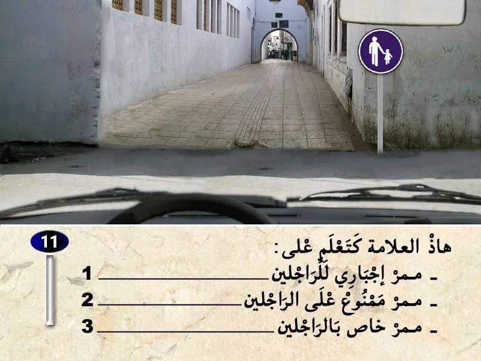
الجواب الصحيح: 3
العلامة الطّّرقية تعني مسلك أو ممر خاص ب الرّاجلين. (بالنسبة لعلامات الإجبار فهي أنواع على حسب الحالة، مثلا في هذه الحالة لا يمكن أن نقول أن العلامة الطّرقية تجبر الرّاجلين على المرور من هذا الممر فقط، لأن للرّاجلين لديهم الحق في المرور من أي طريق أو مسلك، لذلك هذه العلامة فهي تشير على أن الممر خاص ب الرّاجلين وفي نفس الوقت فهي تشير على أن العربات أو الدراجات لا يمكنهم المرور في هذا الممر).
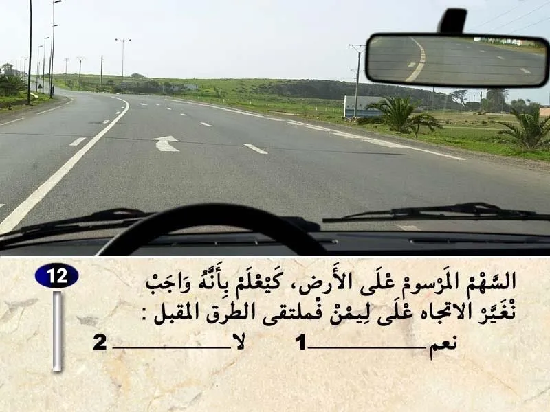
الجواب الصحيح: 2
الأسهم المرسومة على الأرض فهي تعني أسهم الانحياز وهي تشير في هذه الحالة أن أقوم بالانحياز للمسلك الموجود على اليمين ولا تعني الإجبار لتغيير الاتّجاه لليمين في ملتقى الطّرق القادم (يوجد فرق بين أسهم الإجبار المرسومة على الأرض وأسهم الانحياز، أسهم الانحياز تجبرني فقط على الانحياز للمسلك الذي تشير إليه الأسهم). إذن في هذه الحالة الأسهم المرسومة على الأرض لا تعلمني على تغيير الاتّجاه على اليمين في ملتقى الطّرق القادم.
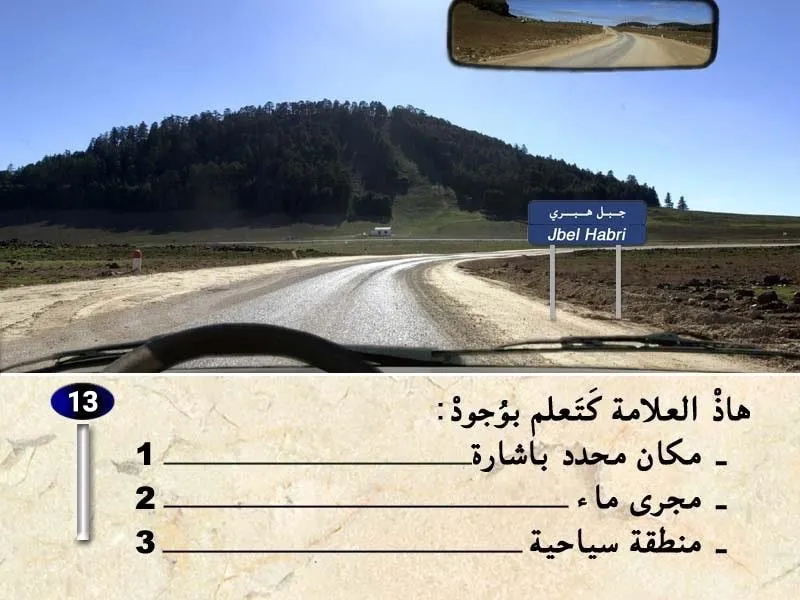
الجواب الصحيح: 1 و 3
العلامة الطّّرقية مكتوب بها جبل هبري يعني مكان محدد بإشارة، وأيضا هذا المكان يعتبر منطقة سياحية. والعلامة الطّرقية لا تشير على أن المكان هو مجرى للماء. إذن في هذه الحالة هذه العلامة الطّرقية فهي تُعْلِمْ على وجود مكان محدد بإشارة وكذلك منطقة سياحية.
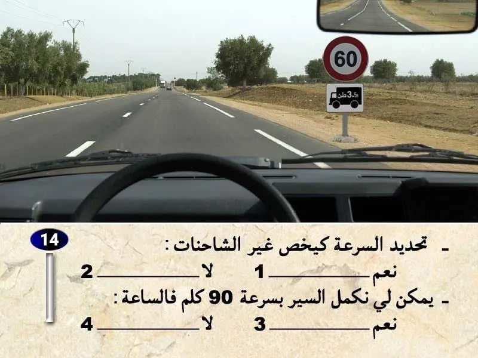
الجواب الصحيح: 1 و 3
العلامة الطّرقية تعني تحديد السّرعة القصوى في 60 كلم في الساعة بالنسبة للشّاحنات التي يتعدى وزنها مع الحمولة 3,5 طن يعني تخّص الشاحنات فقط. بما أنّها طريق وطنية فيمكنني السّير بسرعة قصوى 100 كلم في الساعة يعني يمكنني السّير بسرعة 90 كلم في الساعة.إذن في هذه الحالة تحديد السّرعة يخص الشاحنات فقط ويمكنني أنا إكمال السّير بسرعة 90 كلم في الساعة.
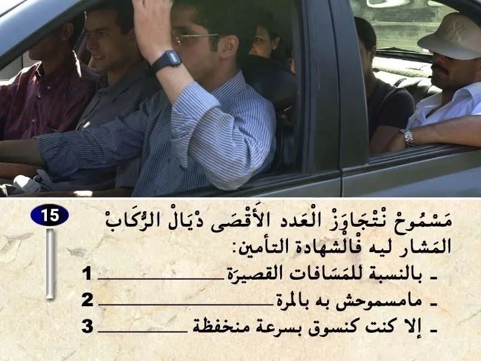
الجواب الصحيح: 2
غير ممكن أن أقوم بتجاوز العدد الأقصى للرّكاب المشار إليه في شهادة التأمين حتى وإن كانت المسافة قصيرة أو إذا كنت أسوق بسرعة منخفضة لأنني سوف أرتكب مخالفة. إذن في هذه الحالة غير مسموح تجاوز العدد الأقصى للرّكاب المشار إليه في شهادة التأمين.
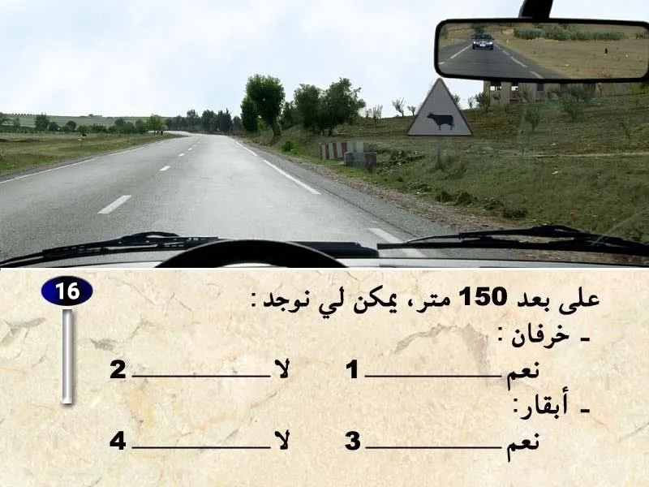
الجواب الصحيح: 1 و 3
العلامة الطّرقية تعني انتباه خطر وجود حيوانات أليفة (امثلا الخرفان، الأبقار، الخ تُعتبر حيوانات أليفة وليست مفترسة...) وبما أننا خارج التجمّع السّكني فإن علامات الخطر سوف يُطبّق على بعد 150 متر. إذن في هذه الحالة على بعد 150 متر يمكن أن أجد خرفان وأيظا أبقار.
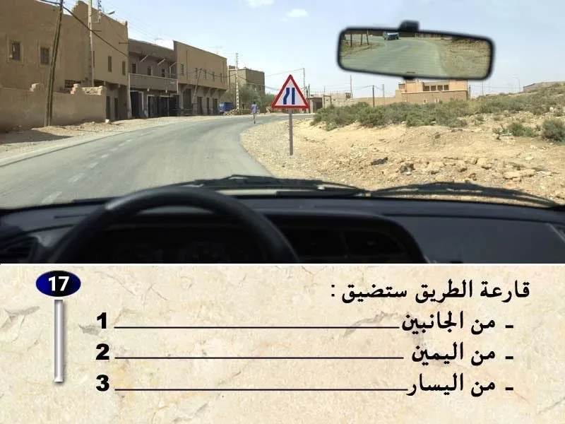
الجواب الصحيح: 3
كما نلاحظ في العلامة الطّرقية فهي تحتوي على خطّين، خط مستقيم من اليمين وهو يشير عى أن الطّريق مستقيمة وخط غير مستقيم من اليسار وهو يشير على أن الجهة اليسرى من الطّريق هي التي سوف تضياق. إذن في هذه الحالة قارعة الطّريق سوف تضياق من اليسار.
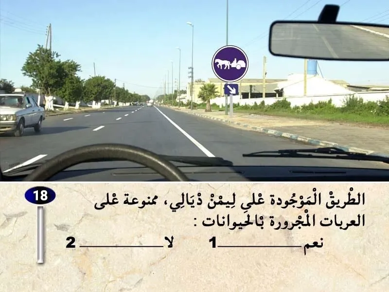
الجواب الصحيح: 2
الطّريق الموجودة على أقصى اليمين فهي خاصة بالعربات المجرورة بالحيوانات وليست ممنوعة عليها كما توضّح العلامة الطّرقية، بل إن السيارات أو الشاحنات أو حتى الدّراجات فهم ممنوعين بالسير في ذالك المسلك. إذن في هذه الحالة الطّريق الموجودة على اليمين ليست ممنوعة على العربات المجرورة بالحيوانات.
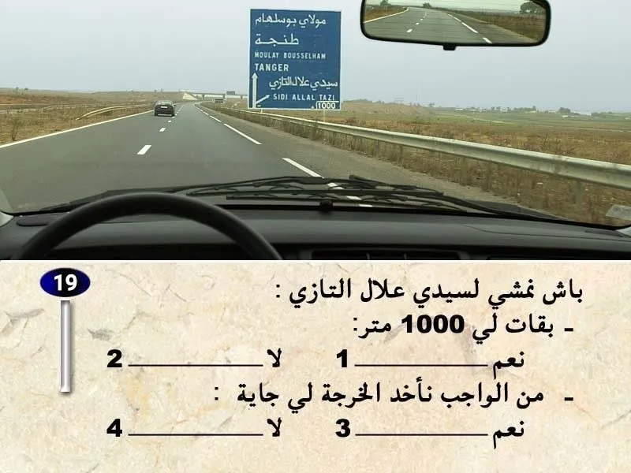
الجواب الصحيح: 2 و 3
العلامة الطّّرقية مكتوب فيها 1000 متر وهو يعني المسافة المتبقّية لي لكي أصل إلى المخرج المؤدي بعد ذلك إلى طريق سيدي علال التازي (يعني المسافة هنا خاصة بالمخرج وليس بسيدي علال التازي). وبطبيعة الحال يجب علي أخد المخرج القادم لكي أذهب إلى سيدي علال التازي لأنه إذا لم أقم بذلك فسوف أذهب مباشرة إلى مولاي بوسلهام وإلى طنجة كما تشير إليه العلامة الطّرقية.
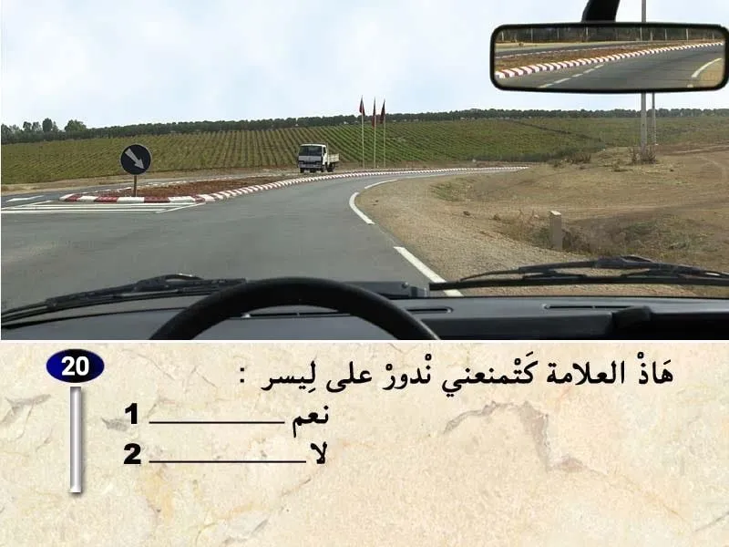
الجواب الصحيح: 2
العلامة الطّرقية فتعني مدار إجباري على اليمين ولا تعني المنع، يعني بصيغة اخرى الإلتزام بالمسلك الذي على اليمين. العلامة كتجبرني من بعدها وماشي قبل منها. الجواب الصحيح هو رقم 2.
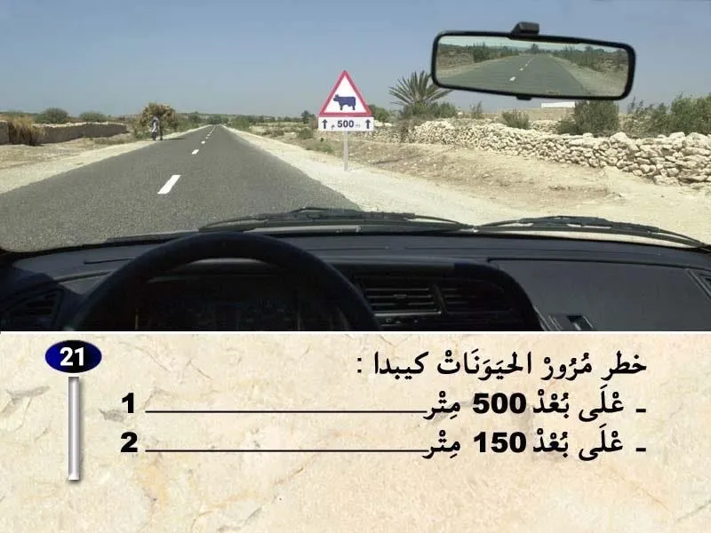
الجواب الصحيح: 2
العلامة الطّرقية تعني إنتباه خطر مرور الحيوانات. توجد علامة تكميلية تحتها وهي تحتوي على معلومتين، أوّل معلومة هي الأسهم وثاني معلومة هي الرّقم 500 متر. بالنسبة لشكل الأسهم فهو يعني الامتداد أو على طول أو على مسافة (والمسافة مكتوبة وهي 500 متر) يعني معنى العلامة التّكميلية هو على طول 500 متر أو يمكننا القول على مسافة 500 متر او يمكننا القول على إمتداد 500 متر وليس على بعد. خلاصة: هذه العلامة الطّرقية تعني انتباه خطر مرور الحيوانات على بعد 150 متر (بما أننّا خارج التجمّع الحضري) ويمتد على مسافة 500 متر هذا الخطر.
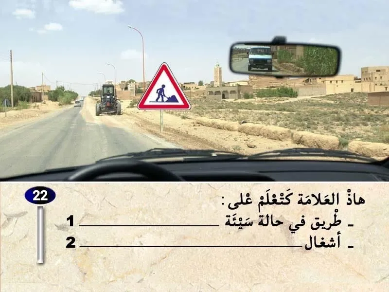
الجواب الصحيح: 2
العلامة الطّرقية تشير إلى وجود أشغال على الطّريق وليس أن الطّريق في حالة سيئّة.
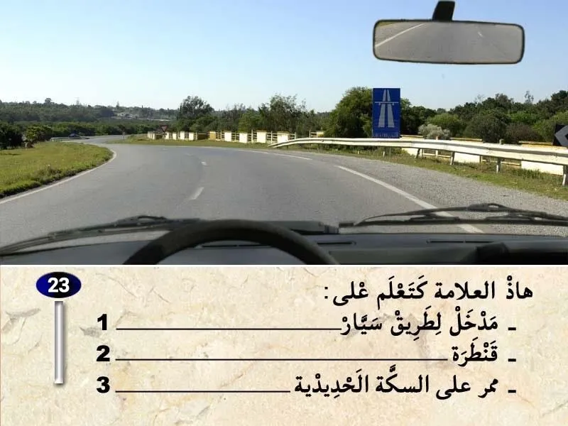
الجواب الصحيح: 1
العلامة الطّرقية تسمى بداية الطّريق السيّار أو مدخل الطّريق السيّار، إذن في هذه الحالة هذه العلامة تُعِلمْ على مدخل لطريق سيار.
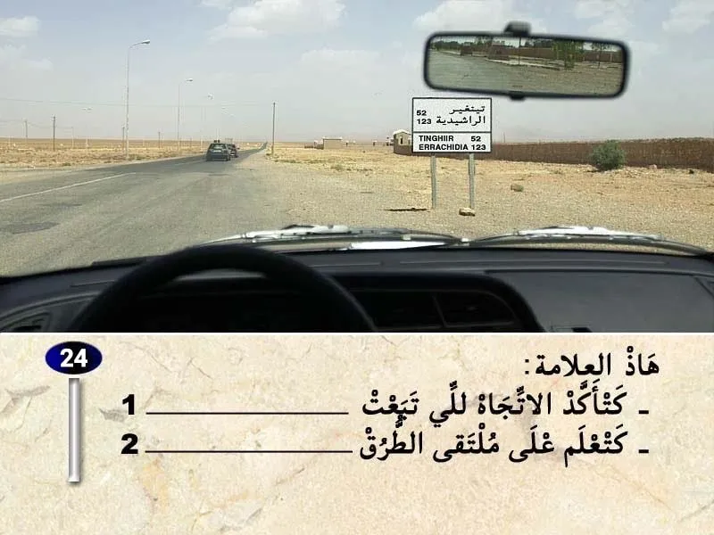
الجواب الصحيح: 1
العلامة الطّرقية الظّاهرة في الصورة فهي علامة متقدّمة كما نلاحظ مكتوب بها تينغير و الراشيدية وقربهم المسافة المتبقّية لكي أصل إليهم، لكي أصل إلى تينغير بقيت لي مسافة 52 كلم ولكي أصل إلى الراشيدية بقيت لي مسافة 123 كلم، مثل هذا النّوع العلامات الطّرقية التي تكون بهذا الشكل فهي تشير إلى الوجهة التي تؤدي إليها هذه الطّريق ولا تشير إلى ملتقى الطّرق. إذن في هذه الحالة هذه العلامة تُأكد الاتّجاه الذي قمت بإتّباعه.
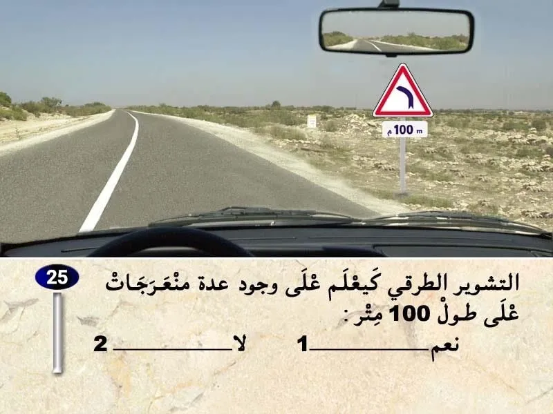
الجواب الصحيح: 2
العلامة الطّرقية تعني انتباه خطر منعرج على اليسار وهي تعني وجود منعرج واحد فقط على اليسار وليس عدّة منعرجات. العلامة التّكميلية في الأسفل والتي تحتوي على 100 متر فهي تعني على أن هذا المنعرج سوف نجده بعد 100 متر ولا تعني على أن المنعرج يتواجد على طول 100 متر. إذن في هذه الحالة التّشوير الطّرقي لا يُعْلِم على وجود عدّة منعرجات على طول 100 متر.
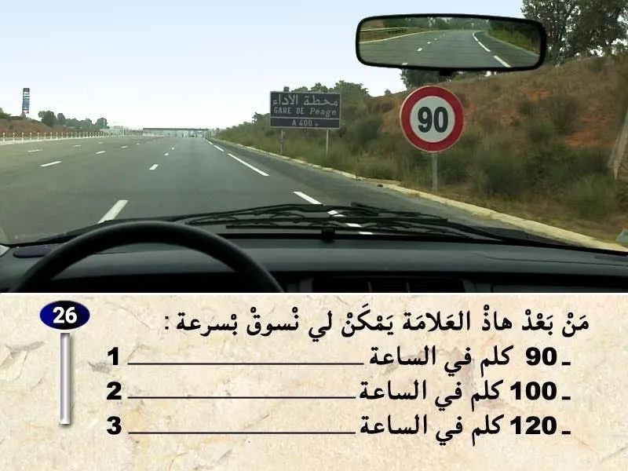
الجواب الصحيح: 1
العلامة الطّرقية تعني تحديد السّرعة في 90 كلم في الساعة وتطبّق من عند العلامة، يعني على أنه لا يمكنني السّير بأكثر من 90 كلم في الساعة إبتداء من هذه العلامة الطّرقية. إذن في هذه الحالة من بعد هذه العلامة يمكنني السّير بسرعة 90 كلم في السّاعة.
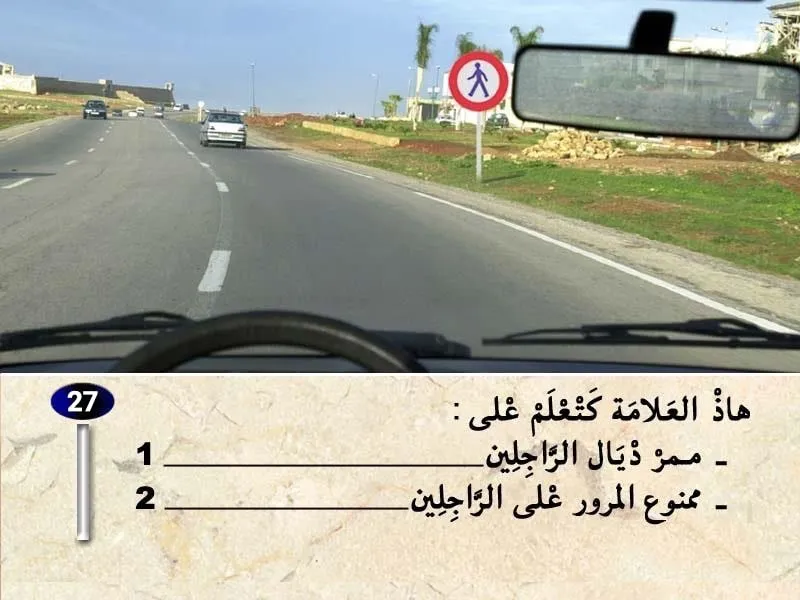
الجواب الصحيح: 2
العلامة الطّرقية التي تكون بهذا الشّكل (دائرة مع لون أحمر) فهي تعني المنع، وفي هذه الحالة فهي تعني ممنوع المرور على الرّاجلين. إذن في هذه الحالة هذه العلامة تُعْلِم على منع مرور الرّاجلين.
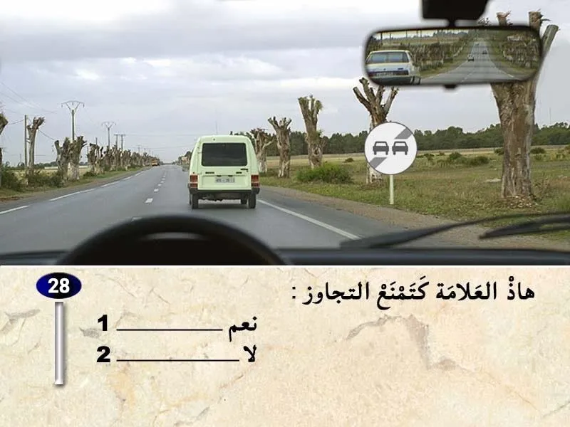
الجواب الصحيح: 2
العلامة الطّرقية تعني انتهاء منع التّجاوز الذي كان سابقا. يعني كان لديّ سابقا علامة ممنوع التّجاوز، والان لديّ هذه العلامة وهي تلغي علامة منع التّجاوز الذي كان سابقا وبالتالي تسمح لي بالتجاوز الان. إذن في هذه الحالة هذه العلامة الطّرقية لا تمنع التّجاوز بل تسمح بالتّجاوز.
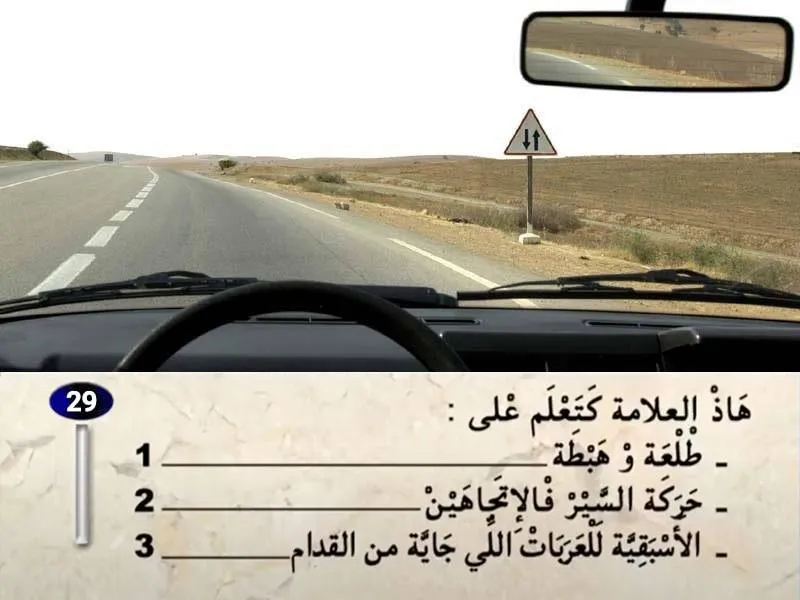
الجواب الصحيح: 2
العلامة الطّرقية تعني انتباه حركة السير في الاتجاهين، يعني أنني سوف أصادف عربات قادمة من الاتّجاه المعاكس. إذن في هذه الحالة هذه العلامة تُعلم على حركة السّير في الاتّجاهين.
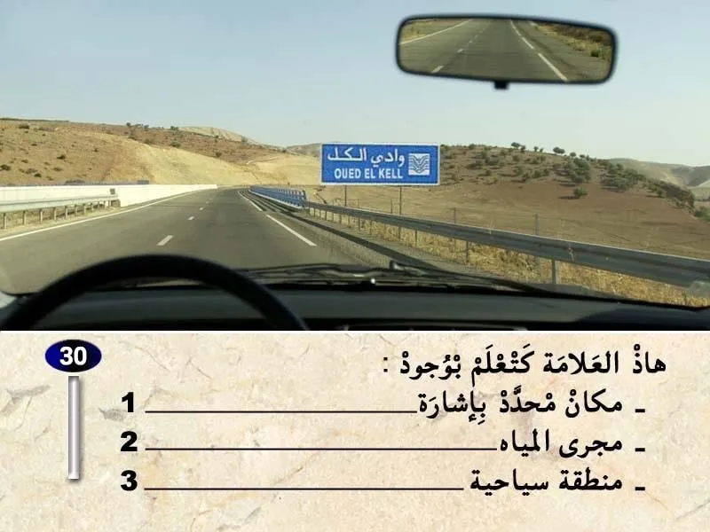
الجواب الصحيح: 2
العلامة الطّّرقية مكتوب بها واد الكل وهو يعني مكان لمجرى الماء (واد). الجواب الصحيح هو رقم 2.
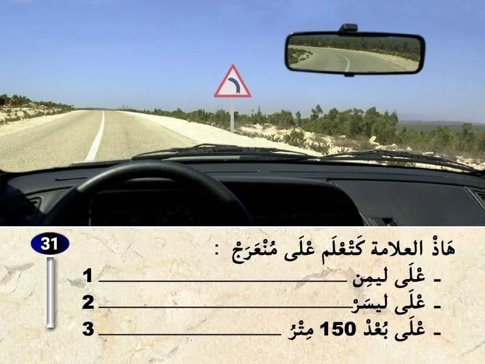
الجواب الصحيح: 2 و 3
العلامة الطّرقية تعني انتباه خطر منعرج على اليسار (كما تشير إليه العلامة الطّرقية) وبما أننا خرج التجمّع السّكني فسوف ونجد هذا المنعرج على بعد 150 متر من العلامة الطّرقية. إذن في هذه الحالة هذه العلامة تُعْلِم على على منعرج على اليسار و على بعد 150 متر.
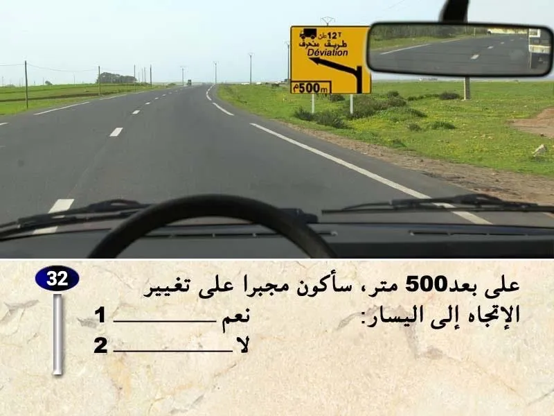
الجواب الصحيح: 2
العلامة الطّرقية تشير إلى وجود طريق منحرف على بعد 500 متر، والعربات المعنيين بهذا الطّريق المنحرف والذين سوف يكونون مجبرين على تغيير الاتّجاه إلى اليسار هم العربات التي يصل وزنهم مع الحمولة إلى 12 طن كما توضّح العلامة الطّرقية.
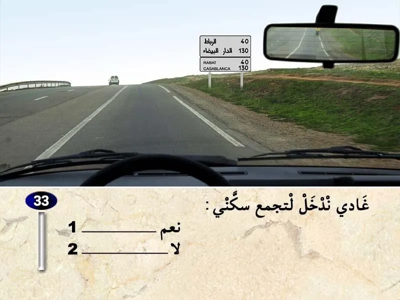
الجواب الصحيح: 2
هذه علامة متقدّمة وهي تعني على أنه بقيت لي مسافة 40 كيلومتر لكي أصل إلى المجمّع السّكني الرباط، وبقيت لي مسافة 140 كيلومتر لكي أصل إلى المجمّع السّكني الدار البيضاء. إذن في هذه الحالة لن أدخل إلى المجمّع السّكني.
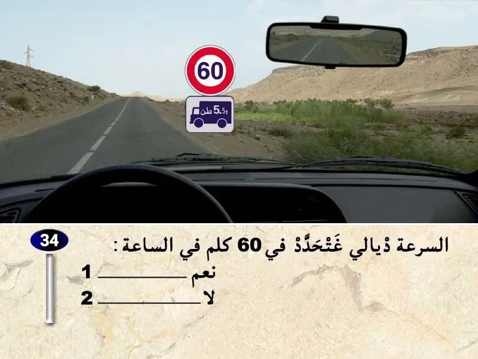
الجواب الصحيح: 2
العلامة الطّرقية تعني تحديد السّرعة القصوى في 60 كلم في الساعة بالنسبة للشّاحنات التي يتعدى وزنها مع الحمولة 5,5 طن يعني تخّص الشاحنات فقط. بما أن العلامة الطّرقية لا تعنيني فأنا غير مجبر بالسّير بسرعة قصوى 60 كلم في الساعة. إذن في هذه الحالة سرعتي لا تتحدد في 60 كلم في الساعة. (بما أنني في طريق وطنية فسرعتي محددة في 100 كلم في الساعة).
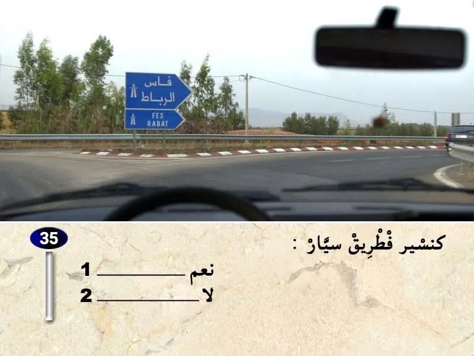
الجواب الصحيح: 2
العلامة الطّرقية الموجودة على اليسار فهي تشير على أنه لو قمت بإتّباع تلك الطّريق على اليمين فسوف أقوم بالتّوجه إلى الطّريق السيّار أمّا الان فأنا لا أتواجد في الطّريق السيّار. إذن في هذه الحالة أنا لا أسير في طريق سيّار.
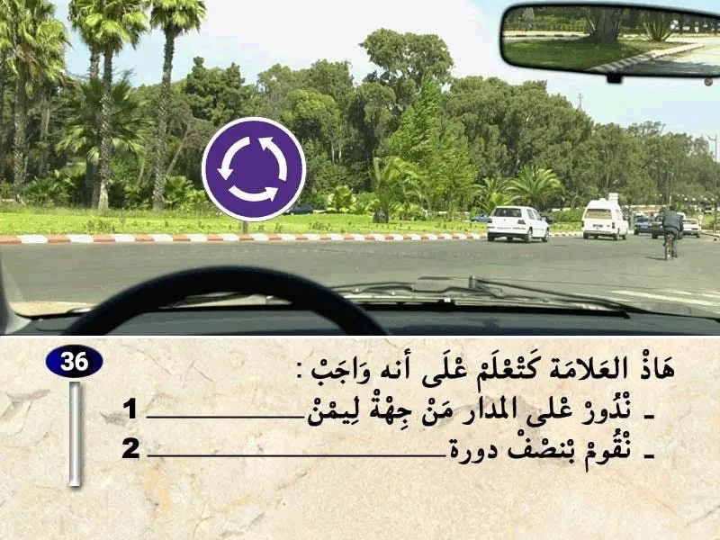
الجواب الصحيح: 1
العلامة الطّرقية تشير إلى وجود مدار، أثناء وجودنا في المدار فمن الواجب علينا عند الوصول إليه أن نسير على الجهة اليمنى لكي نكمل السيّر حوله وليس الانعطاف مباشرة على اليسار أي أن أقوم بنصف دورة وانعطف على اليسار عند الوصول إليه.
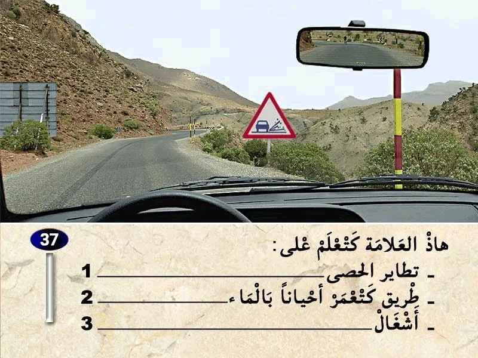
الجواب الصحيح: 1
الإشارة الطّرقية فهي تعني انتباه خطر تطاير الحصى. (العلامة الطّرقية لا تعني طريق تحتوي أحيانا على الماء ولا تعني الأشغال).
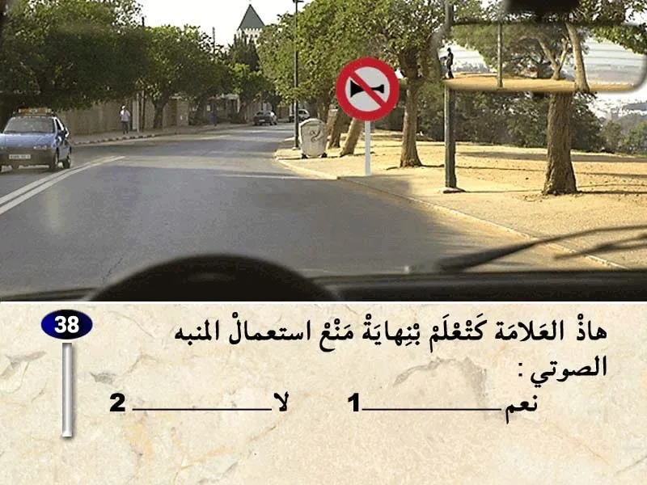
الجواب الصحيح: 2
العلامة الطّرقية تعني ممنوع استعمال المنبه الصوتي وليس انتهاء منع استعمال المنبّه الصوتي. إذن في هذه الحالة العلامة الطّرقية لا تُعلم على نهاية منع استعمال المنبّه الصوتي.
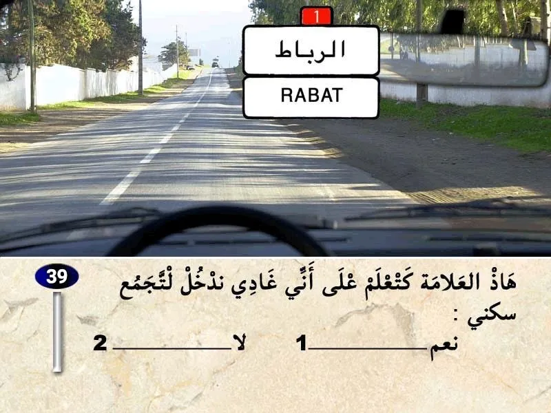
الجواب الصحيح: 1
عندما أجد علامة طرقية مثل التي تظهر في الصورة بدون رقم الكيلومترات فهذا يعني على أنني قد وصلت إلى تجمّع سكني، في حالة أخرى إذا وجدت علامة طرقية مثل التي في الصورة وفيها عدد الكيلومترات مثلا 20 كيلومتر فهذا يعني انه بقيت لي 20 كيلومتر لكي أصل إلى التجمّع السكني. الان لا يظهر أي رقم في العلامة الطّرقية إذن في هذه الحالة هذه العلامة الطّرقية تعلم على أنني سوف أدخل إلى مجمّع سكني الرباط.
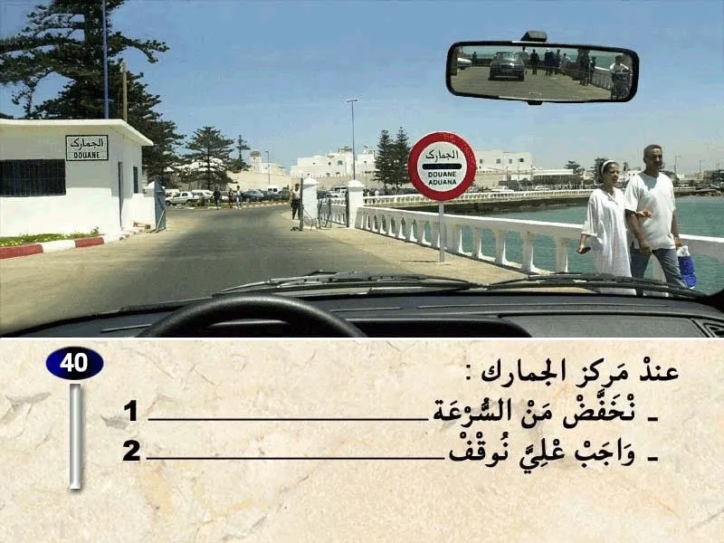
الجواب الصحيح: 2
العلامة الطّرقية تعني وجود جمارك. عند الوصول إلى مكان يتواجد فيه الجمارك فمن الواجب عليّ الوقوف.